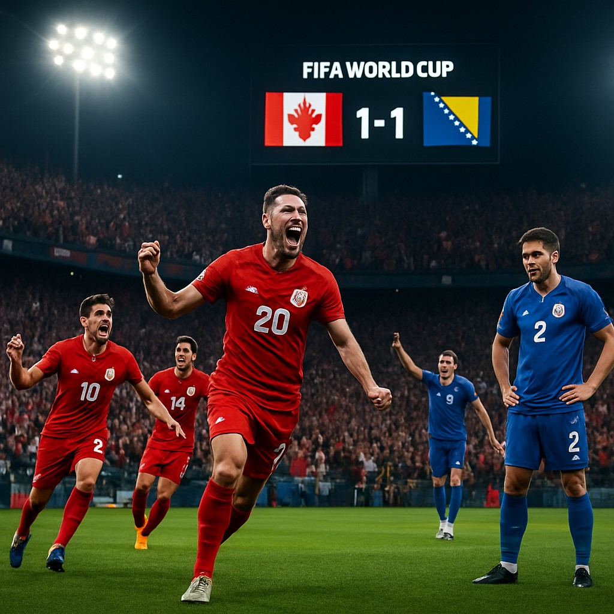

In a tightly contested Group Stage encounter, Canada and Bosnia-Herzegovina played out a 1-1 draw on Friday, June 12th, in the 2026 FIFA World Cup. The match, which took place at 19:00 local time, saw both sides battle for crucial points in their early campaign.
Match Summary
Canada entered the game as slight favorites according to pre-match odds, with Sports Select offering a -154 moneyline for Canada and +300 for Bosnia-Herzegovina. Despite the betting favoritism, the game was evenly matched throughout. Both teams created several scoring opportunities, but neither could break the deadlock until the final stages of the match.
The lone goal for each side came in the second half. Canada’s goal came from a well-taken set-piece, while Bosnia-Herzegovina responded with a counter-attack goal just before the final whistle.
Odds Analysis
The result of the match aligns closely with the over/under line of 2.5 goals set by Sports Select, as the game concluded with exactly two goals scored. While the draw was not the most likely outcome according to the initial odds, it was a realistic and fair result given the competitive nature of both teams.
Impact on Group Standings
With the draw, both teams remain in the middle of the group standings. Canada now sits with one point from their opening match, while Bosnia-Herzegovina also holds one point. The result keeps both teams in contention for advancement, though they’ll need to secure wins in their upcoming fixtures to move into a stronger position.
Upcoming Fixtures
Canada's next match is scheduled for June 12th at 21:00, where they will face Bosnia-Herzegovina again. Based on current odds, the game is expected to be another tight affair with no clear favorite. The upcoming fixture will be pivotal for both teams as they seek to climb the group table.
South Korea's victory over the Czech Republic earlier in the day sees them rise in the group standings, putting pressure on other teams to perform in their remaining fixtures.